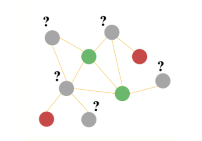
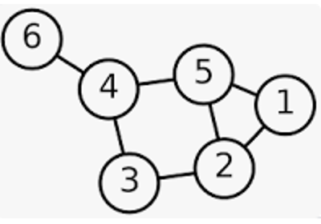
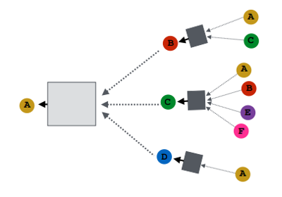
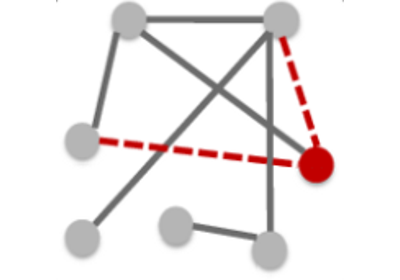
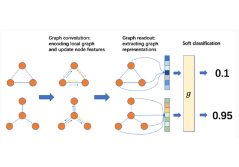
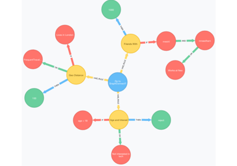

A Blitz Introduction to DGL

Node Classification with DGL

How Does DGL Represent A Graph?
How Does DGL Represent A Graph?

Write your own GNN module

Link Prediction using Graph Neural Networks
Link Prediction using Graph Neural Networks

Training a GNN for Graph Classification
Training a GNN for Graph Classification

Make Your Own Dataset